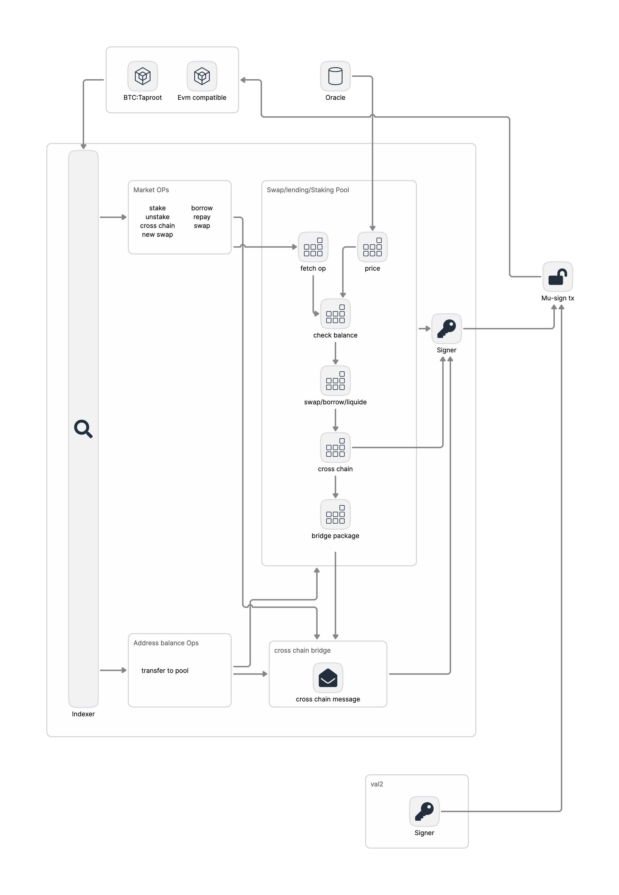

Protocol Architecture

Lending Pool Core
The LendingPoolCore serves as the heart of the Gross Protocol. It plays a central role in managing the state of the system and executing key functions. Here's what the LendingPoolCore does:
-
Maintains the State of Every Reserve and All Deposited Assets: The LendingPoolCore keeps track of the current state of every reserve in the lending pool. This includes the total amount of each currency in the reserve, the current interest rates, and other key parameters. It also tracks all the assets that have been deposited into the lending pool by lenders.
-
Handles Basic Logic: The LendingPoolCore is responsible for executing the basic logic of the Gross Protocol. This includes the cumulation of the indexes, which is a measure of the total amount of interest that has been earned or paid over time. It also involves the calculation of the interest rates, which are determined algorithmically based on the current state of the lending pool.
LendingPool
The LendingPool, facilitates interaction with the reserves through a variety of actions. These actions are:
Deposit: Users can deposit funds into a reserve, which increases the pool's liquidity.
Borrow: Users can borrow funds from the pool, provided they have sufficient collateral.
Rate Swap: Users can switch between stable and variable interest rates for their loans.
Flash Loan: This feature allows users to borrow and repay a loan within a single transaction, provided the loan is repaid by the end of the transaction.
Redeem: Users can withdraw their deposited funds, along with any accrued interest.
Repay: Borrowers can repay their loans, either partially or in full, at any time.
Liquidation: If a borrow position becomes undercollateralized (the value of the collateral falls below a certain threshold), it can be liquidated. The collateral is sold to repay the loan.
When a user opens a borrow position, the tokens used as collateral are locked and cannot be transferred. This ensures that the collateral remains in place to secure the loan.